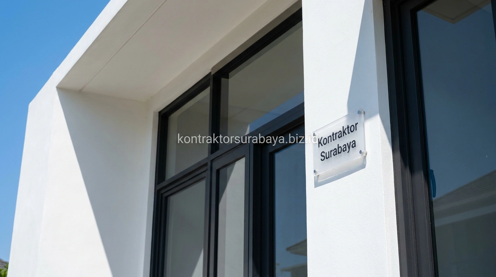

Membangun hunian di kawasan metropolitan Surabaya seperti Kenjeran, Pakuwon City, Citraland, Rungkut, hingga Gunung Anyar memiliki tantangan tersendiri terkait faktor alam. Sebagai kota pesisir beriklim tropis basah dengan paparan sinar ultraviolet tinggi dan udara berkadar garam, rumah tinggal membutuhkan rekayasa konstruksi yang tepat agar cat dinding tidak cepat kusam, besi tulangan tidak keropos terkorosi, dan dak beton tidak mengalami retak rambut akibat muai-susut termal.
1. Tantangan Cuaca Pesisir yang Memengaruhi Konstruksi Rumah di Surabaya
Kadar garam pada udara pesisir, suhu tinggi sepanjang tahun, dan curah hujan yang cukup intens adalah tiga tantangan cuaca utama yang perlu diperhitungkan dalam konstruksi rumah di Surabaya.
Kombinasi faktor ini mempercepat proses korosi pada material logam, memudarkan warna cat lebih cepat dibanding daerah dengan iklim lebih sejuk, serta meningkatkan risiko rembesan air jika detail waterproofing tidak diperhitungkan dengan baik sejak tahap konstruksi struktur awal.
2. Campuran Beton yang Tahan terhadap Perubahan Suhu Ekstrem
Campuran beton dengan mutu sesuai standar dan proses curing yang tepat membantu mengurangi risiko retak akibat pemuaian dan penyusutan material saat suhu berubah drastis antara siang dan malam.
- Mutu Beton Standar SNI (K-225 hingga K-300): Menjamin kepadatan matriks semen sehingga pori-pori beton rapat dan tidak mudah ditembus uap air asin.
- Proses Curing Beton Terkontrol: Perawatan penyiraman air atau penutupan karung basah pasca pengecoran mencegah dehidrasi dini yang memicu retak susut plastis.
- Ketebalan Selimut Beton (Concrete Cover): Dibuat minimal 2,5 - 3 cm untuk melindungi besi tulangan dari kontak langsung dengan zat asam dan garam udara luar.
- Penambahan Besi Tulangan Praktis: Menahan tegangan geser dan tarik akibat deformasi termal suhu panas Surabaya.

3. Cat Eksterior yang Direkomendasikan untuk Iklim Pesisir
Cat dengan lapisan pelindung UV, anti jamur, dan daya rekat tinggi pada permukaan beton adalah spesifikasi cat eksterior yang direkomendasikan untuk menghadapi iklim pesisir Surabaya.
Cat standar tanpa lapisan pelindung UV cenderung lebih cepat mengapur dan pudar akibat paparan matahari terik sepanjang tahun. Sementara kandungan biosida anti jamur dan alga pada cat premium menjaga dinding luar tetap bersih dari noda hitam kehijauan akibat cipratan hujan dan tingginya kelembapan udara pesisir.
4. Detail Waterproofing yang Mencegah Kerusakan Akibat Kelembapan
Waterproofing pada sambungan dinding dan dak beton, dilengkapi kemiringan atap yang tepat untuk drainase, mencegah air hujan meresap ke dalam struktur bangunan yang berisiko menimbulkan kerusakan jangka panjang.
Detail ini terutama penting pada sambungan antara dinding dan atap, area sekitar kusen jendela, serta permukaan dak talang beton yang langsung terpapar hujan. Celah mikro yang tidak tertutup lapisan kedap air elastis dapat menjadi jalur rembesan tersembunyi yang merusak plafon gipsum dan cat interior rumah.
5. Pemilihan Material Kusen dan Railing agar Tahan Korosi
Kusen aluminium atau UPVC serta railing dari material anti karat lebih direkomendasikan dibanding besi biasa untuk bangunan di kawasan dengan kadar garam udara yang lebih tinggi seperti Surabaya:
- Kusen Aluminium Anodized / Powder Coating: Tahan karat 100%, bebas rayap, tidak memuai saat terkena tempias hujan, dan sangat minim perawatan.
- Kusen UPVC Berpenguat Baja Internal: Memberikan insulasi termal dan peredam suara bising jalanan yang sangat efektif.
- Railing Stainless Steel Grade 304 atau Kaca Tempered: Mencegah karat merah pada balkon eksterior yang langsung berhadapan dengan angin laut.
- Baut & Dynabolt Galvanis Hot-Dip: Menghindari korosi pada titik-titik sambungan struktural kanopi dan fasad sekunder.
6. Kesalahan yang Membuat Rumah Modern Tropis Cepat Rusak di Iklim Pesisir
Menggunakan cat tanpa pelindung UV, mengabaikan waterproofing sambungan, memilih material logam polos tanpa anti karat, dan mutu beton di bawah standar adalah empat kesalahan fatal:
- Menggunakan Cat Dinding Standar Indoor di Luar: Menyebabkan cat cepat mengelupas dan belang dalam waktu kurang dari satu tahun.
- Mengabaikan Waterproofing dan Sudut Kemiringan Dak: Menyebabkan air tergenang (ponding) di atap dak yang memicu rembesan kronis.
- Menggunakan Besi Hollow Hitam Tanpa Cat Zinkromat: Menimbulkan karat internal yang cepat menjalar dan merusak pagar serta kanopi.
- Campuran Adukan Semen-Pasir Terlalu Miskin: Mengakibatkan plesteran dinding rapuh (berpasir) sehingga tidak mampu mengikat cat dengan sempurna.
"Kekuatan rumah tropis di Surabaya bukan hanya dinilai dari keindahan fasadnya, melainkan dari ketepatan formulasi material struktur yang mampu bertahan puluhan tahun melawan panas dan udara pesisir."
Setiap lokasi memiliki tingkat paparan cuaca pesisir yang berbeda tergantung jarak dari garis pantai, sehingga spesifikasi material perlu disesuaikan melalui survei kondisi lahan langsung. Pelajari cakupan layanan konstruksi rumah lengkap pada halaman jasa kontraktor rumah Surabaya, atau lihat ragam paket layanan lainnya pada halaman layanan kami.